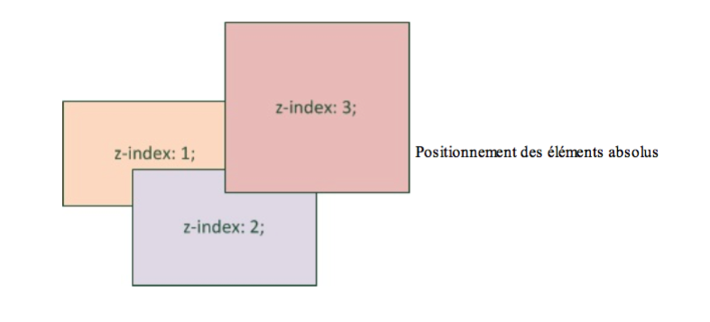

Je suis un grand voyageur
Bla bla bla bla (texte de l'article)
Heureusement, le fait d'avoir transformé les éléments en inline-block nous permet d'utiliser
une nouvelle propriété, normalement réservée auxtable aux: vertical-align.
Cette propriété permet de modifier l'alignement vertical des éléments.
Voici quelques-unes des valeurs possibles pour cette propriété :
- baseline : aligne de la base de l'élément avec celle de l'élément parent (par défaut) ; top : aligne en haut ;
- top : aligne en haut ;
- middle : centre verticalement ;
- bottom : aligne en bas ;
- (valeur en pxou %) : aligne à une certaine distance de la ligne de base (baseline).
Il existe d'autres techniques un peu particulières permettant de positionner avec précision des éléments sur la page :
- Le positionnement absolu : il nous permet de placer un élément n'importe où sur la page (en haut à gauche, en bas à droite, tout au centre, etc.).
- Le positionnement fixe : identique au positionnement absolu mais,
cette fois, l'élément reste toujours visible, même si on descend plus bas dans la page.
C'est un peu le même principe que background-attachment: fixed; (si vous vous en souvenez encore). - Le positionnement relatif : permet de décaler l'élément par rapport à sa position normale.
Il faut d'abord faire son choixentre les trois modes de positionnement disponibles. Pour cela, on utilise la propriété CSS position à laquelle on donne une de ces valeurs :
- absolute : Le positionnement absolu permet de placer un élément (réellement)
n'importe où sur la page. Pour effectuer un positionnement absolu, on doit écrire :
Mais cela ne suffit pas ! On a dit qu'on voulait un positionnement absolu, mais encore faut-il dire où l'on veut que le bloc soit positionné sur la page.
Pour ce faire, on va utiliser quatre propriétés CSS :
- left : position par rapport à la gauche de la page ;
- right : position par rapport à la droite de la page ;
- top : position par rapport au haut de la page ;
- bottom : position par rapport au bas de la page ;
On peut leur donner une valeur en pixels, comme 14px, ou bien une valeur en pourcentage, comme 50%.
Les éléments positionnés en absolu sont placés par-dessus le reste des éléments de la page!

Par ailleurs, si vous placez deux éléments en absolu vers le même endroit, ils risquent de se chevaucher. Dans ce cas,
utilisez la propriété z-index pour indiquer quel élément doit apparaître au-dessus des autres. - fixed : Le principe est exactement le même que pour le positionnement
absolu sauf que, cette fois, le bloc reste fixe à sa position,
même si on descend plus bas dans la page. - relative : Plus délicat, le positionnement relatif peut vite devenir
difficile à utiliser. Ce positionnement permet d'effectuer
des « ajustements » : l'élément est décalé par rapport à sa position initiale.